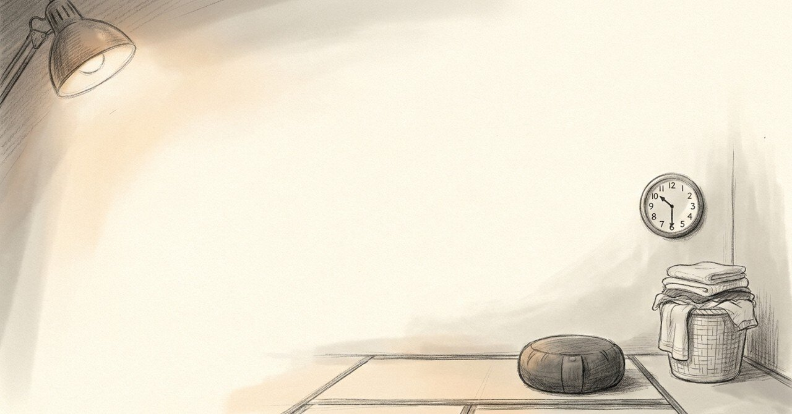

あれ、早く終わってる？と書いた瞑想2日目の夜

2026年4月30日、過去の日記の中で、はてなマークが二つ並んでいる夜があった。
今日の現場
1年7ヶ月前、瞑想を始めて2日目の夜の記録を読んでいる
当時の自分は、ジムから帰って家事まで済ませた22時台に、自分でも驚いている
「あれ？／なぜこんなに早く終わってる？」と書いてある
まだ瞑想の効果を断定できないまま、可能性として書き留めている温度がある
あの頃と今
2024年9月14日、22時26分。
今日は19時45分までジムに行ったけどもうこの時間には全部終わっている。／あれ？／ジム行ったりご飯もしっかり作ってるのに、洗濯物も畳んでいるのになぜこんなに早く終わってる？／瞑想の効果？？／なんかすごくない？？もしかしたら、めっちゃクリエイティブに集中して動けているのかも。
朝の瞑想は35分、明日は40分にしたい、と書いてある。ジムでは体幹トレーニングのあと自転車を25分、マシンを何セットか。お風呂でも5分以上瞑想できた。お弁当用にゆで卵を持っていったのが腹持ち良かった。プロテインを飲んで帰ってきた。
仕事のメモも入っている。福岡の店舗で、声の掛け合いがまだ少し物足りないけれど、要求したことには応えてくれていてすごい、と書いている。ステーキのカットがバラついていて、それは改善してほしい、と。
頭の中
瞑想を始めて2日で、本人は「めっちゃクリエイティブに集中して動けているのかも」と書いた。たぶん、これは効果の正体ではない。2日で習慣の効果が出るとは思えない。出ていたのは、自分の動きを観察する目線の方だ。何分でジムを終えて、何分で洗濯物を畳んで、22時に間に合った、と数えられる目線。
その目線を持てた夜に、「なぜか早く終わっている」という驚きが生まれた。順番は逆で、観察できるから速くなったのではなく、観察できるから速さに気づいた。
まだ途中のこと
驚いた夜にだけ、はてなマークを二つ書ける。1年7ヶ月後の自分は、はてなマークを書く回数がだいぶ減っている。慣れたのか、観察をやめたのか、どちらか分からない。
自分は今、子どもがAIと毎日数分だけ話せる仕組みを作っている。続いた効果を子ども自身が驚けるように、短い記録が残る形を中に入れているのは、たぶんこの夜の二つのはてなマークの記憶があるからだ。
#瞑想 #ジャーナリング #習慣化 #自己観察 #日記